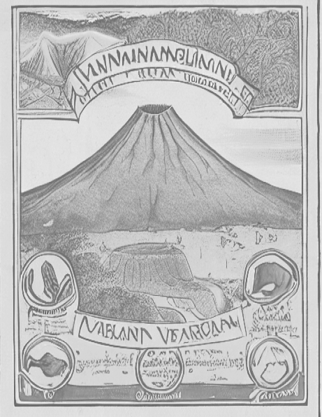

Historia
El Dios Viejo
Aún no se tiene con exactitud una fecha de su origen y su iniciación, pero
data de la época de el Pleístoceno tardío, siendo este originado desde los
inicios de la humanidad, conservando este siempre su carácter activo. Como
todos los demás volcanes sus pobladores desarrollan leyendas que sostienen
y mantienen a través del tiempo como es el caso de la leyenda del Rey
Colimán, de donde surge el significado de este afamado volcán, también
llamado huehuetéotl, palabra proveniente del náhuatl que significa 'dios-viejo
y era el nombre que utilizaban para referirse antes al volcán.
Leer más
